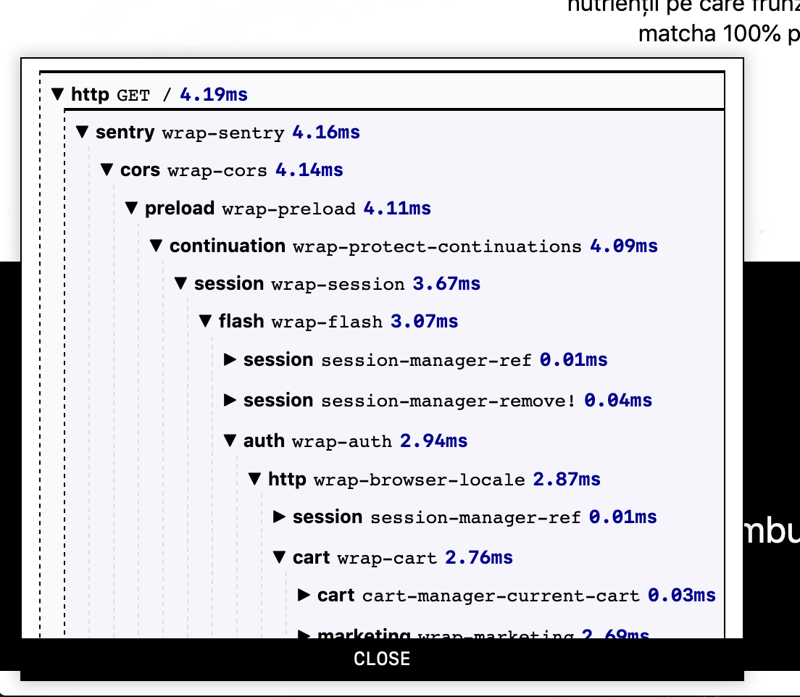

22 Profiler
| (require koyo/profiler) | package: koyo-lib |
This module provides an instrumenting profiler that can be used to measure how much time particular parts of your application are taking to execute. It comes with an embeddable widget that you can display on every page of your application during development. This is what it looks like:

Most of the functionality provided by koyo is instrumented using this profiler.
parameter
(profiler-enabled? enabled?) → void? enabled? : boolean?
= #f
This parameter controls whether or not profiling is enabled. If the
profiler is disabled then no timings will be collected and the
widget will not be shown.
procedure
handler : procedure?
Wraps a request handler for timing instrumentation.
syntax
(with-timing maybe-label description e ...+)
maybe-label =
| label-sym
description : non-empty-string?
label-sym : symbol?
Evaluates es and returns the result. If profiling is
enabled then it times how long it takes to run the es and
associates them with label-sym and description
under the parent timing (if any).
When a label-sym is not provided, the label of the enclosing with-timing block is reused.
procedure
(profile-write) → void?
Writes the HTML widget for the current profile into the current
output port.